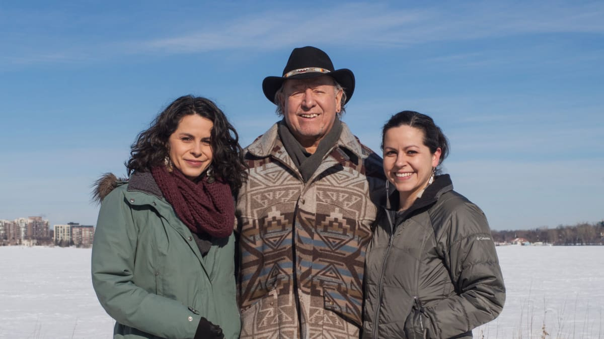
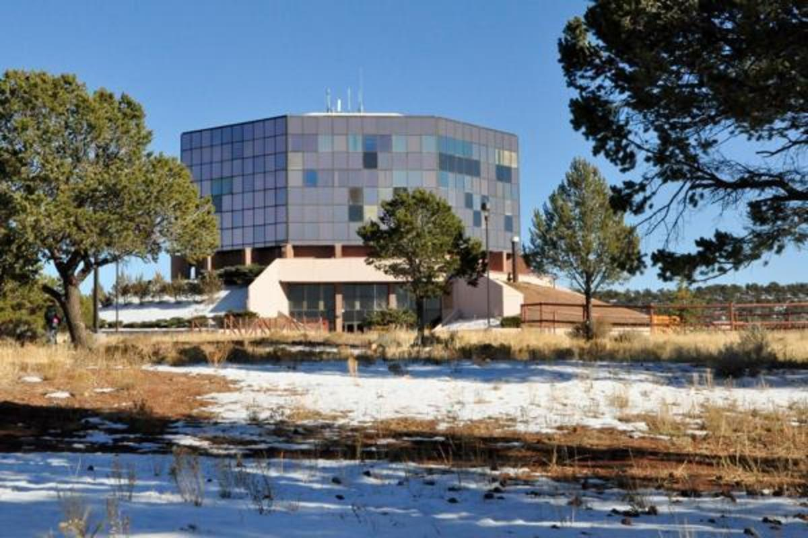
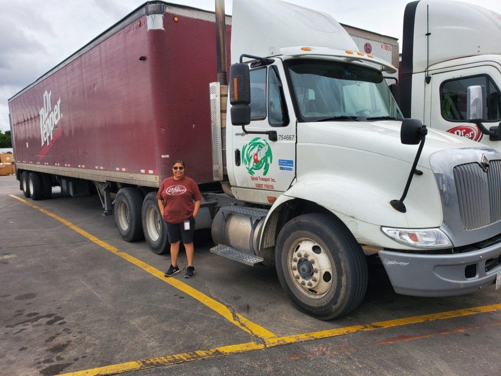
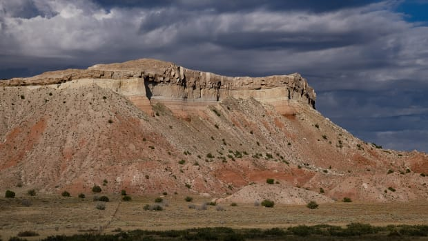
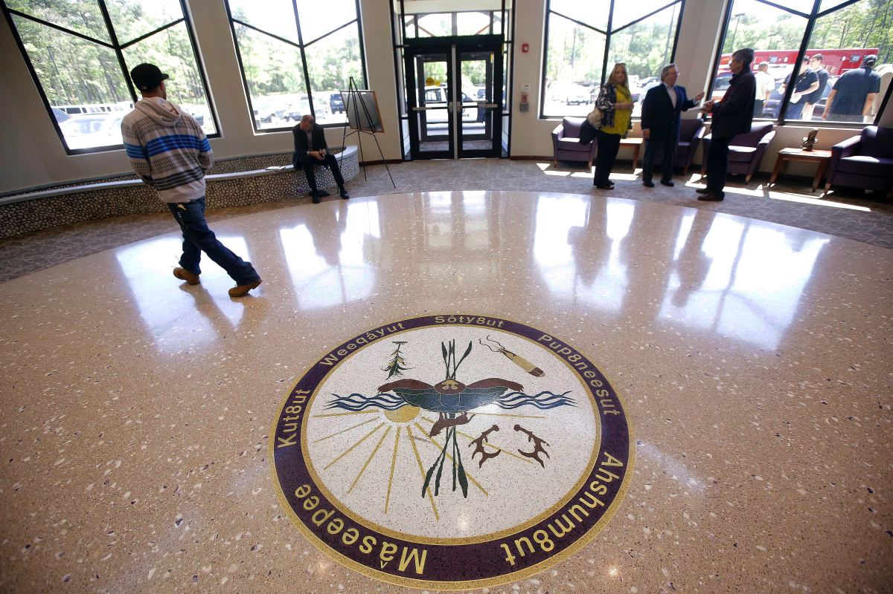
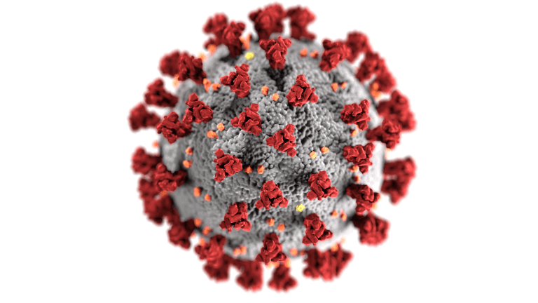
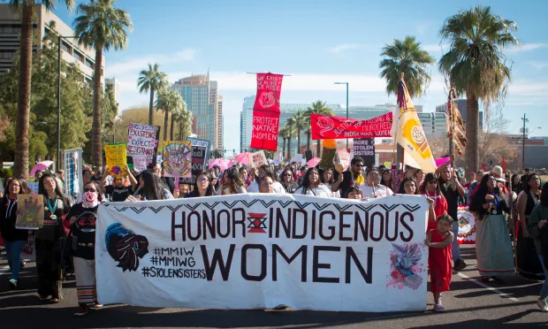
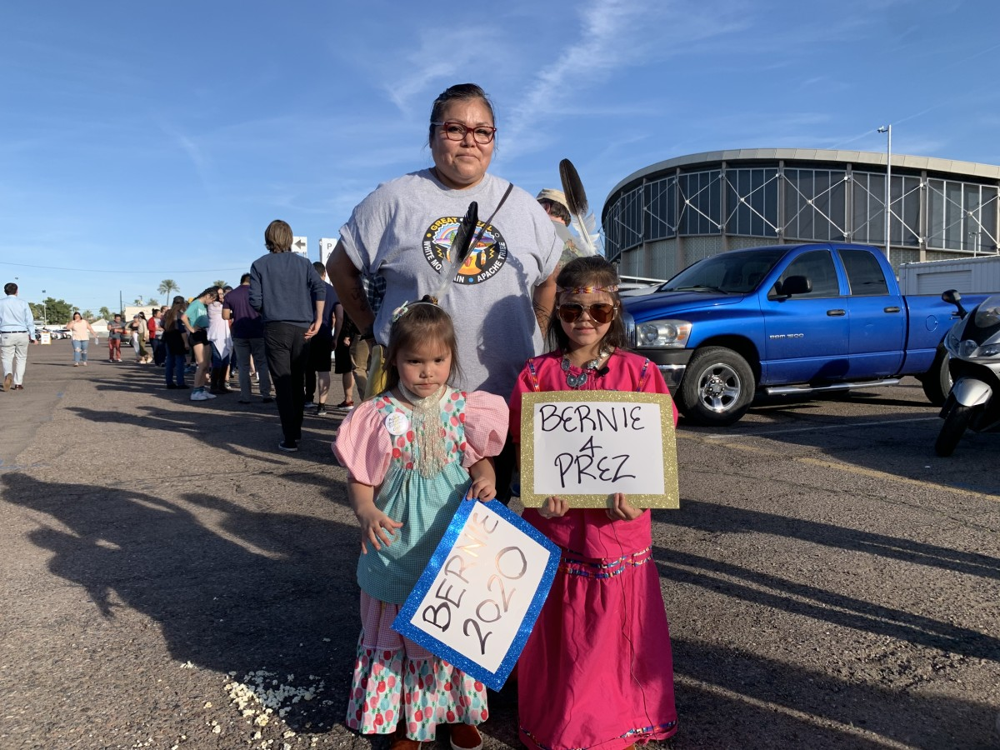

Nearly 200 years ago, the Dakota community of Ḣeyata Ọtunwe existed along the banks of Bde Maka Ska. It was a place where Dakota people fished and harvested wild rice.

If Tricia Zunker wins Wisconsin’s special election Tuesday, she would become the third Native woman serving in Congress this session
President signs proclamation declaring May 5 National Missing and Murdered American Indians and Alaska Natives Awareness Day

‘Largest representation of Native American members in any one year’ are elected to the American Academy of Arts and Sciences

Native truck drivers across the U.S. report similar changes tied to the pandemic: long shifts, extra precautions, fewer wrecks and more “thank yous.”

Two pueblos in New Mexico have some of the highest infection rates in the United States. The numbers are stark.

The Mashpee Wampanoag Tribal Chairman spoke out for the first time since he learned that his nation’s reservation will be disestablished and their land will be taken out of trust.

What is the novel coronavirus? It is a new virus that had never been detected before January 2020. The virus has spread quickly since then and has been detected on every continent besides Antarctica.
Italy is not the only government to protect its community from a growing health crisis by imposing travel restrictions. Tribal nations are doing the same things too.

"Aunties really do make the world go round," writes a Twitter user.

Bernie Sanders’ rally in Phoenix felt like an Indian market with the scores of Native people lining up and carrying their signs.
Presidential candidate Michael Bloomberg announced a formal policy plan Thursday to “uphold tribal sovereignty and improve the lives of Native Americans."